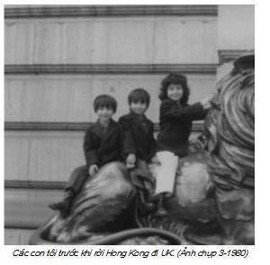
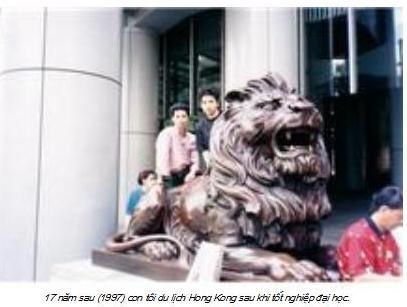

Chương 6

au hai tuần, trại tuyên bố chúng tôi tự do đi làm, được tiền trợ cấp 2 tuần (theo số người), sau đó cắt trừ người già, người ốm, tật nguyền. Gia đình tôi được khoảng 500 HK$, vợ tôi theo chị Sâm người cùng thuyền, biết tiếng Quảng, đi chợ mua bếp điện, 2 chiếc xoong, 1 túi gạo 5 kg, mắm muối chuẩn bị cho những ngày tự do. Tôi sang trại Tuen Mun tìm gia đình chú thím. Rất may hỏi thăm, có người biết, lên tầng 20. Gặp nhau chúng tôi mừng mừng tủi tủi, hỏi đủ chuyện về từng người.
Thím tôi kể, thằng con rể bố mẹ nó không cho đi, bắt luôn thằng cháu ngoại mới 10 tháng tuổi phải xa mẹ. Tôi hỏi, “Sao không để cô Định ở lại với chồng con, chứ chia ly thế này đau lòng lắm”. Thím bảo, “Chú thím có sang Kiến An nói chuyện với ông bà thông gia, nhưng họ đâu có nghe”. Tôi hỏi, “Sự thể ra sao, hay chú nói không khéo.” Chú tôi bỗng nhiên đỏ mặt, giận dữ bảo, “Anh có biết, bố mẹ thằng Dũng nói gì không? Họ bảo, chúng tôi không thể giúp được, người trong xã có đánh chết nó, gia đình cũng chịu.” Chú tôi rất hiền, ít khi nổi nóng, nhắc đến chuyện này tự nhiên ông nổi giận cả với tôi, phải tức lắm ông mới nổi đóa như vậy. Sự thể như sau: Con gái ông, y sĩ của Bệnh viện Đông Y Hòa Bình, Hải Phòng, chồng giáo viên cấp 2 ở Kiến An. Chúng đến với nhau do tình yêu, sống rất hòa thuận, hạnh phúc, có thằng con đầu lòng gần 1 tuổi. Chỉ vì chiến tranh Trung–Việt chúng phải chia ly, vợ một nơi, chồng con môt nẻo, hàng ngày vì nhớ con, suốt thời gian đi thuyền đến nay cô Định ăn uống cầm hơi, ngườI gầy như ve sầu, trông rất tội nghiệp. Khi chú thím và cô Định phải thôi việc, gia đình quyết định đi Hong Kong, ông bà đến nhà thông gia đặt vấn đề:
1- Xin cho con rể đi cùng để vợ chồng chúng đoàn tụ.
2- Nếu con gái ông bà ở lại với chồng con, chỉ mong gia đình thông gia thương yêu, đùm bọc che chở coi nó như con ruột.
Ai ngờ, ông thông gia trả lời trắng trợn, “Chúng tôi chịu, nhỡ bà con trong làng xã ghét người Hoa có giết chết, chúng tôi cũng không thể can thiệp”, đồng thời yêu cầu giữ lại đứa cháu đích tôn vì gia đình hiếm muộn. Hết tình, cạn nghĩa, chẳng còn gi phảI nói, chú thím tôi đành đứng lên, đi về.
Đến Hong Kong, trong cuộc phỏng vấn của phái đoàn Liên Hiệp Quốc, cô Định xin bảo lãnh cho chồng con và được chấp nhận. Nhưng chồng cô, Nguyễn Đình Dũng, sau 3 tháng xa vợ, nghe lời cha mẹ, kết hôn với cô gái trong làng. Biết tin được bảo lãnh sang Anh, năm 1981, Dũng viết thư cho tôi, nhờ tôi đứng ra giúp vợ chồng đoàn tụ. Gia đình chú thím tôi được bạn bè thân quen ở Việt nam báo tin từ lâu, thằng con rể của ông bà đã lấy vợ. Nhận được thư khẩn cầu giúp đỡ của Nguyễn đình Dũng, tôi là một trưởng tộc, chỉ yêu cầu Dũng “gửi giấy xác nhận của xã và ban gian hiệu nhà trường tình trạng hôn nhân hiện tại.” Dũng không hồi âm, coi như mọi chuyện đã chấm hết.
Năm 1984, cô Định đi bước nữa, tháng 5-1988, sau 9 năm, cô Định đã đón được con từ Việt nam theo chương trình đoàn tụ. Hiện nay cháu Huy có bằng cử nhân tin học, có công ăn việc làm, có gia đình, cuộc sống ổn định ở London.
Tuen Mun có 2 hai tòa nhà dành cho người tỵ nạn. Một tòa 7 tầng và tòa 21 tầng vừa xây xong, chưa hoàn tất buồng, nhưng nhà tài phiệt này đã cho người tỵ nạn ở, không lấy tiền của Liên Hiệp Quốc. Mỗi tầng có hai phòng rất to, chứa chừng chục gia đình, tất cả giải chiếu nằm ngay dưới sàn đá hoa và lấy đồ đạc vây quanh làm biên giới. Tuen Mun chế độ khác trại tôi.
Từ Kho Đen chuyển đến đây, chỉ một tuần đã được tự do kiếm việc làm nhưng vẫn được cấp tiêu chuẩn cơm. Nhiều gia đình đi làm vắng, nhưng nhà thầu vẫn sáng cơm hộp, chiều bánh mỳ, thịt hộp/cá hộp, ăn không hết có người đem ra chợ bán. Ngày Chủ Nhật, ngày nghỉ họ vẫn lĩnh cơm. Suất thừa nhà thầu đem về, đưa đi đâu, bán hay cho các trại mồi côi, người tàn tật chẳng ai biết. Từ tháng 4-1979 đến 2-1980 chấm dứt khi trại Tuen Mun đóng cửa, vì ăn ở quá mất vệ sinh. Mọi người chuyển sang trại Sắm-sủi-pầu -Tâm Thủy Bộ- và trại Jubilee kế sát bên.
Gia đình ông chú tôi có 6 thanh niên còn độc thân, khi tôi đến sự khá giả thể hiện rất rõ, tuy gia đình ông đi làm mới gần 3 tháng. Vì thế rất nhiều gia đình cố thủ không muốn đi định cư, có gia đình ở 4 năm, tuy công việc chỉ là tạm thời, không bảo hiểm y tế và tai nạn, không có chế độ hưu bổng. Ngược lại, làm được đồng nào đút túi đồng ấy, nếu phải trả tiền giường và tiền điện như trại tôi thì cũng rất thấp -24 HK$/tháng- coi như có đóng góp, thấm tháp gì so với giá thuê nhà ở ngoài.
Đươc vài tháng, có người bắt đầu mua hàng gửi về Việt Nam. Thời bấy giờ nhận hàng nước ngoài bị đánh thuế 100%. Việc người tỵ nạn gửi hàng về đã khuyến khích người trong nước tìm cách vượt biên. Từ năm 1980, kinh tế Việt Nam bên bờ vực thẳm, bo bo không có mà ăn, nên có câu “Cột đèn mà biết đi cũng vượt biên.” Thuyền Việt Nam đi Hong Kong như đi hội. Ngày nay người ta vẫn “vượt biên” dài dài theo đường du học, du lịch, thăm thân nhân, kết hôn, xuất khẩu lao động, một số theo đường dây buôn người đi qua Nga, Ba Lan, Tiệp, thậm chí thuê passport lừa hải quan.
Sáng sớm mọi người ra chầu ở cửa trại, họp thành chợ người chờ các ông chủ. Thực ra các trại tỵ nạn đều ở Kowloon -Cửu Long- hay Tân Lãnh Địa (the New Territories) chứ không ở Hong Kong. Cửu Long có hàng ngàn xưởng lớn nhỏ làm đồ chơi cho trẻ em, lắp ráp đồ điện tử, đồng hồ rẻ tiền, may mặc, cửa hàng bán buôn bán lẻ và đóng du thuyền cho tầng lớp giàu có, thượng lưu trong và ngoài nước. Có nghĩa là họ rất cần những lao động phổ thông với đồng lương thấp so với người bản địa. Lương từ 25 đến 35 HK$/ngày, cuối tuần thanh toán.
Tôi chưa được đi làm thì A11 có hai người bị tai nạn lao động. Một chị hơn 40 tuổi bị máy làm dập nát bàn tay phải do ngủ gật, đưa cả bàn tay vào máy thay cho miếng kim loại. Chị bị cắt bỏ 3 ngón, bàn tay phải coi như hết khả năng lao động. Một thanh niên làm xuởng lắp đồng hồ, đáng lẽ đưa đồng hồ vào khuôn áp lực, do mệt đút ngay tay. Cả 5 ngón tay nát, đang nằm bệnh viện. Lao động tạm tuyển, chả có ký kết, khi bị tai nạn tùy thuộc vào lòng hảo tâm của chủ mà thôi.
Chuyện này làm rúng động chúng tôi, nhưng có người lo, người bảo có số, không làm lấy gì bỏ mồm, còn phải dành dụm chút ít khi đi định cư chứ.
Tôi gặp anh Hồ Coóng -Hà Quang- dân xế của Công ty Vận tải 1 Hà Nội tại bàn cờ tướng. Vừa đánh cờ vừa nói chuyện tai nạn, anh bảo:
- Chú và tôi chỉ trông mong vào hai bàn tay nuôi vợ nuôi con, nhỡ cụt mẹ nó, mai kia sang định cư nước thứ ba đi ăn mày à? Mà chắc gì người ta nhận mình về nuôi báo cô. Vì thế tớ đi làm lao công ở xưởng đóng du thuyền lương cũng 30 HK$/ngày, chả lo lắng gì, hết tuần lĩnh tiền. Tay đốc công rất tử tế, còn cho tớ làm thêm giờ. Lao công mà cũng làm thêm giờ, chú có tin được không? Lão ta bảo, từng khốn khổ khi từ “ông nội” sang, may có người giúp mới được như ngày nay. Chú có đi làm cùng, mai anh hỏi, nếu được, anh em mình làm cho vui. Chứ tay chú làm phẫu thuật nhỡ cụt, phí lắm.
Tôi im lặng, rồi hỏi anh:
- Thế có phải rửa cầu tiêu và bưng nước cho đốc công không?
- Không, có mụ già làm hết rồi. Mụ ta đun nước, quét dọn cầu tiêu, lau chùi văn phòng. Anh em mình chỉ có việc bốc tất cả các gỗ vụn, sắt vụn, quét mùn cưa, phoi bào… cho vào xe cút kít đổ ra biển. Vừa làm vừa chơi chẳng nặng nhọc gì, không lo què chân gẫy tay.
Anh này tốt thật, nói có lý. Nghĩ vậy, tôi bảo:
- Mai anh hỏi, nếu được, tuần sau được ra tự do, em đi làm với anh.
Anh cười vui vẻ, vỗ vai tôi, đọc câu ca dao thời đại:
Vua quan ở đất nhà bay
Dù xe ngựa cưỡi đến đây cũng hèn.
Bọn mình là cái chó gì, đến đây là thằng tỵ nạn, ăn xin mà thôi. Thôi, đời mình coi như bỏ, cố cho con nên người là được.
Hoàn cảnh anh rất éo le. Năm 1972, B52 trải thảm Hà Nội, nhà anh ở ngõ chợ Khâm Thiên. Đêm ấy anh chạy xe, bom trúng nhà, vợ anh và đứa con út chết không tìm ra xác, hai đứa lớn về bên ngoại, sống sót. Nay gần ngũ tuần, anh thương vợ, ở vậy. Nguyện vọng muốn sang Mỹ định cư, có lần tâm sự, anh bảo, nếu có mụ Mỹ đen già giàu có muốn lấy, anh lấy liền để cho hai đứa con ăn học lên người.
Tôi hỏi, sao anh thích định cư Mỹ khi vợ con anh chết vì bom Mỹ. Anh bảo, trâu bò húc nhau, mình thân phận sâu kiến không may thì dính. Vả lại cái số của vợ con anh chỉ được thế. Anh không oán người phi công đã thả bom nhà anh, vì họ là người lính, phải làm theo lệnh chỉ huy cũng như anh đã từng lái xe đưa bộ đội, súng đạn đi B, đi C giết hại bà con miền Nam, Lào, Căm-bốt đó thôi.“Chiến tranh là chiến tranh, không phải do tôi do anh -người lính ở hai chiến tuyến- gây ra”, trách nhiệm thuộc về người đứng đầu nhà nước.
Hầu hết công nhân xưởng tôi là dân địa phương đều ca tụng Mỹ, miền đất hứa trên thế gian này. Hễ ai nói muốn định cư nước khác hay Dzấng-coọc- Anh quốc- họ dè bỉu và nói toạc ra rằng, “sang Anh vỏ khoai tây cũng không có mà ăn.” Có người lại còn cực đoan đến mức ghét nếu ai nói xin định cư ở Anh. Ai cũng sang Mỹ, nước Mỹ làm sao ôm trọn số tỵ nạn cả triệu người!
Tôi chọn 4 quốc gia, Úc Đại Lợi vì khí hậu giống Việt Nam, Thụy Sĩ, Canada và Anh quốc. Đăng kí xin đi Úc, bị loại từ đầu, không gọi tiếp kiến. Thụy Sĩ tuyên bố chỉ nhận gia đình có thân nhân tàn tật. Thế là phèo, hết hy vọng. Một người quen tôi đi định cư Canada và tháng 11-1979 viết thư về kể rét thê thảm lắm. Nhiệt độ đầu tháng 11 dương lịch mà đã âm 10 độ C, anh ta còn viết thêm, giữa mùa Đông nhiệt độ có thể xuống -25 hay -30 C. Nghe mà sợ, ngang sống trong tủ đá, tôi quyết định đăng kí định cư Vương quốc Anh.
Năm 1979, Đảng Bảo thủ thắng cử, bà Margret Thatcher làm Thủ tướng, Bà Đầm Thép -Iron Lady-, đã ủng hộ đề nghị của Tổng thống Mỹ Reagan. Vương quốc Anh nhận 19 ngàn người tỵ nạn Việt Nam trên toàn thế giới. Trại Khải Đức Đông thông báo sẽ có nhiều đợt tiếp kiến. Trước khi đăng ký, tôi sang trại Tâm Thủy Bộ -Sắm-sủi-pầu- trao đổi với gia đình chú thím. Các em con chú tôi vẫn thích xin định cư ở Mỹ.
Tôi đưa ra lý do vì sao tôi xin đi Anh.
1. Ai cũng xin định cư ở Mỹ nên số đăng ký rất lớn, chính phủ Mỹ sẽ dành nhiều ưu tiên cho những sĩ quan, quân nhân, dân sự từng làm cho chính quyền Việt Nam Cộng hòa, sau đó mới đến những thành phần khác. Hy vọng được Mỹ chấp nhận là điều mong manh, người Bắc, càng ít cơ hội.
2. Dù muốn dù không vẫn có sự mặc cảm Nam-Bắc, là rào cản và khó khăn lớn nhất khi định cư ở Mỹ.
3. Nước Anh không có chế độ quân dịch, đi lính cũng chỉ là một nghề nghiệp, trong khi đó gia đình chú tôi có 4 con trai đang tuổi tòng quân, gia đình tôi có 2 (tuy còn nhỏ). Đây là đất nước lý tưởng nếu như không muốn con tham gia quân đội.
4. Từ xưa đến nay, ai cũng nói Anh-Pháp-Mỹ, có nghĩa là đó là ba cường quốc, Hong Kong chỉ là thuộc địa mà đời sống đã cao hơn Trung Quốc và Việt Nam nhiều lần, cớ gì cuộc sống ở Anh lại tồi tệ hơn Việt Nam.
Ngày 15 tháng 1-1980, gia đình tôi được tiếp kiến. Tôi hy vọng tràn trề khi nghe tin sẽ được báo ngày đi định cư.
Ai được Mỹ chấp nhận, phải sang Phi Luật Tân học Anh ngữ. A12 có anh nhà báo miền Trung, Anh ngữ thuộc loại siêu đẳng, ấy thế gia đình anh cũng phải sang Phi. Sang được 2 tuần, anh viết thư về, than rằng chỉ sau 5 ngày vào trại, bọn trộm người Phi cắt điện, xông vào cướp sạch đồ đạc. Thế là gia đình anh trắng tay. Anh khuyên bạn bè, nếu phải sang Phi nên xin định cư nước khác, lộn xộn không thể tưởng tượng được.
Anh Hà Quang chuẩn bị lên đường đi Phi.
Tôi cũng chuyển sang trại khác, A-Cai-Lau-Cai 2, chờ đi Vương quốc Anh. Chúng tôi mất liên lạc.
Tôi làm lao công với anh ở Cửu Long được 8 tháng. Đây là một kỷ niệm đẹp của đời tỵ nạn, tôi và anh hợp tâm tình. Tôi từng đọc nhiều sách truyện, anh lại là người ham hiểu biết. Vừa bốc gỗ, hốt mùn cưa, vỏ bào, tôi vừa kể chuyện Hạng Võ, Trình Giảo Kim, Tống Địch Thanh, Chiêu Quân cống Hồ, đến Tam quốc, Thủy hử chúng tôi vui lắm.
Anh có nhược điểm là nghiện trò đỏ đen. Muốn giúp anh hiểu tác hại của cờ bạc, tôi mua một cuốn sổ nhỏ, trưa không ngủ, ngồi xem, được hay thua đều bí mật ghi. Sau 1 tháng tôi cho anh xem, anh thua vài trăm. Anh hứa sẽ bỏ. Chỉ được vài buổi lại chơi, nhưng lần này anh hứa chỉ chơi 5 HK$/một buổi.
Một xưởng đóng du thuyền chừng dưới 100 người, nghỉ trưa 2 giờ có đến 6, 7 nhóm sát phạt nhau đủ thứ xì-phé, xóc đĩa, túm tụm vòng trong vòng ngoài. Nhiều người cuối tuần lĩnh tiền trả nợ coi như trắng tay. Tôi quen ông bạn ở London, mang bài sang nhà con rể gạ đánh bạc. Tôi hỏi, sao làm thế, ông nháy mắt, ‘‘khỏi phải vay nó!’’
Tuần lương đầu tiên, tôi lĩnh hơn 200 HK$ kể cả thêm giờ. Đêm đó chúng tôi đi mua đồ. Mua cho con gái một con búp bê thật to, 25 HK$, bộ váy áo thật đẹp, còn hai thằng bé mỗi đứa một bộ quần áo in hình Mighty Mouse, mỗi đứa đôi giầy. Con tôi sung sướng lắm, lần đầu tiên trong đời được ôm búp bê, biết mở và nhắm mắt và to như vậy. Nhìn nó, tôi nghĩ đến hình ảnh ông già Jean Valjean mua búp bê cho bé Cosette trong Những người khốn khổ của Victor Hugo.
Kỉ niệm ấy đến giờ nó vẫn nhớ. Cả nhà ăn bữa kem cốc và uống coca để mừng đồng tiền đầu tiên kiếm được dù chỉ là thằng hốt rác xưởng đóng tầu.
Sau gần 3 tháng đi làm, cuộc sống trong A tôi thay đổi. Quần áo đã tươm tất, bữa ăn cải thiện, nhiều người mua máy thu thanh 1 hay 2 cassettes làm thay đổi không khí và cũng từ đây bắt đầu trộm cắp và làm điếm ngay tại A. Một A ít nhất cũng đến 500 người, cuộc sống xô bồ, người tốt kẻ xấu khó biết. Thỉnh thoảng nửa đêm có tiếng kêu thất thanh “trộm, trộm” nổi lên, cả A bừng tỉnh, xôn xao, người đuổi, người thét, có lần kẻ xấu đành vứt bỏ lại chiếc va-ly chúng vừa trộm. Trong A đưa ra quy định đóng cửa hai đầu. Mùa hè, tường tôn, mái tôn, không quạt, đóng cửa không thể chịu nổi, vả lại “nội gián” lấy cớ đi toilet mở cửa, đồng bọn vào xoáy cũng chịu. Người ở tầng 1 hay mất đồ, tầng 2 đỡ hơn và tầng 3 hầu như an toàn. A12 của tôi trong 6 tháng có đến mười mấy vụ trộm vặt, một số chủ thuyền ra thuê nhà ngoài phố. Nhưng rất may hồi ấy chưa có kẻ nghiện và buôn bán ma túy như những năm sau.
Số người cả hai trại A và B lên đến vài ngàn.
Những dịch vụ nho nhỏ bắt đầu hình thành.
Sáng có hàng xôi, bánh bao, riêng hàng phở đông khách nhất. Anh hàng phở người Nam Định biết vài câu tiếng Quảng ú ớ, thế mà ra dấu tay người bán thịt hiểu.
Anh kể, ngày đầu tiên là khó khăn nhất. Hôm ấy, anh đến cửa hàng, mua các loại xương về hầm lấy nước, tay chỉ vào tảng thịt, chỉ vào số 10 ở cái cân (ý nói 10 cân) nhưng anh chắp hai bàn tay đưa vào má, mắt nhắm. Đột nhiên anh làm tiếng gà gáy “ò ó o”, rồi xòe 5 ngón tay (muốn nói 5 giờ sáng), lấy 2 ngón tay làm dấu chân bước. Tay bán hàng cười, gật đầu. Năm giờ sáng hôm sau, anh đến, anh hàng thịt đã đóng gói sẵn.
Từ đấy quen lệ, chẳng khó khăn gì. Anh cười sung sướng, vì nghĩ sang Bỉ anh sẽ mở quán phở, chắc đông khách lắm. Không biết ước vọng nho nhỏ của anh có thành hiện thực không, bởi vì hiện nay ở Đức, Anh, Pháp rất nhiều nhà hàng có phở Việt Nam, không rõ ở Bỉ có chưa.
Một lần mua xôi, chị bán hàng tâm sự, khi nào sang Đức anh chị sẽ làm xe đẩy bán xôi rong như ở Hong Kong chắc kiếm được. Hy vọng, ngày nay chị có nhà hàng trong đó có món xôi bánh khúc gia truyền.
Ngày 20 tháng 3-1980 gia đình tôi được lệnh chuyển sang trại A-Cai-Lau-Cai 2. Số tiền kiếm được mua va ly, quần áo, radio cassette, giầy dép và để dành gần 400 HK$. Thường chỉ tối đa 4 đến 7 ngày là là bay, nhưng gia đình tôi và 11 gia đình khác chờ hơn 3 tuần.
Ngày 10-4-1980 đi U.K. Không đi làm, mấy trăm đô để dành tiêu hết, không một xu dính túi khi lên máy bay.

